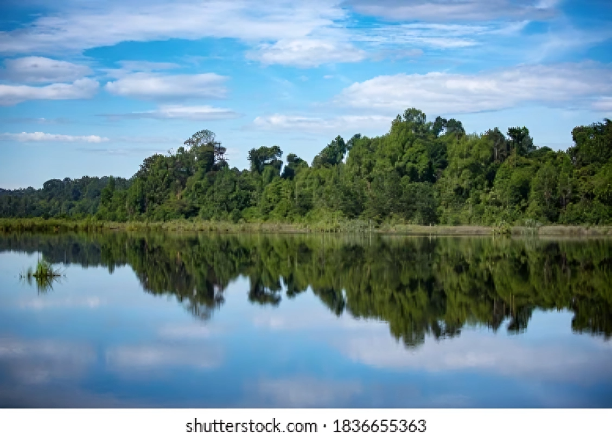

In Malaysia, the state of Pahang contains the district of Bera. With a total area of 2,214 square kilometers and a population of 2,214, Bera District is situated in the southern part of Pahang state. It was formally established as the eleventh district in Pahang on January 1, 1992, following its separation from Temerloh District.

The Tasek Bera pond is the inspiration behind the district's name. Furthermore, the Orang Asli Semelai group provided the name "Bera," which comes from the term "Reba," which refers to a particular kind of water weed. A tall, strange old tree is said to be so big that when it falls, the massive impact drives the tree deep into the ground, creating a pond. Reba existed on buried trunks, branches, and twigs.
According to YM Datuk Tengku Alaudin Tengku Majid, the former Secretary-General of the Ministry of Culture, Arts, and Tourism Malaysia and a Chenor local culture who collects folklore and oral literature. He said that the word "bera" comes from the word "bercempera," which refers to people who leave their village and nation because they are flooded and turned into lakes.